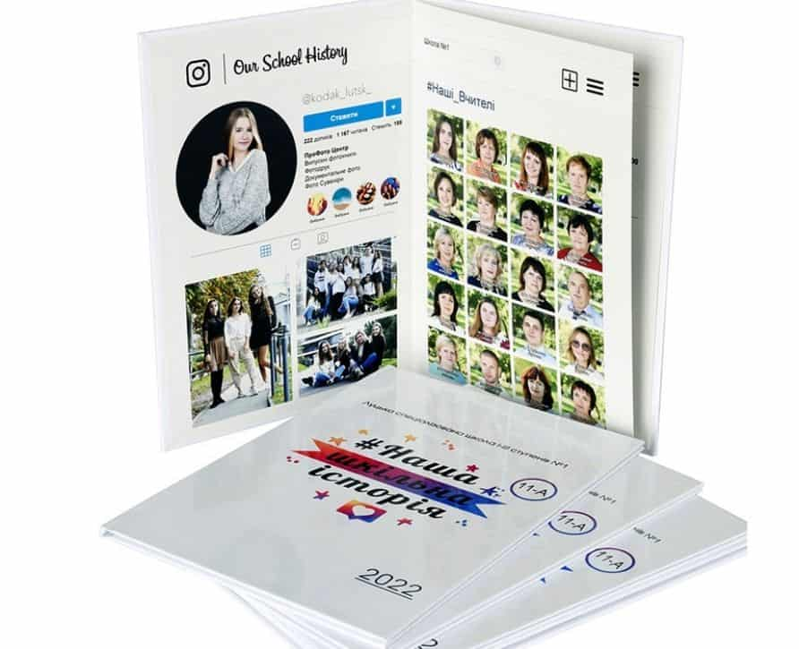

Фотокниги

Це найкращий спосіб, щоб зберегти у пам'яті щасливі моменти Вашого життя. Перші кроки, весілля, дні народження, сімейні відпочинки та інші події будуть назавжди збережені в одній книзі і радувати Вас приємними спогадами. Дизайн кожної фотокниги наші дизайнери розробляють індивідуально.